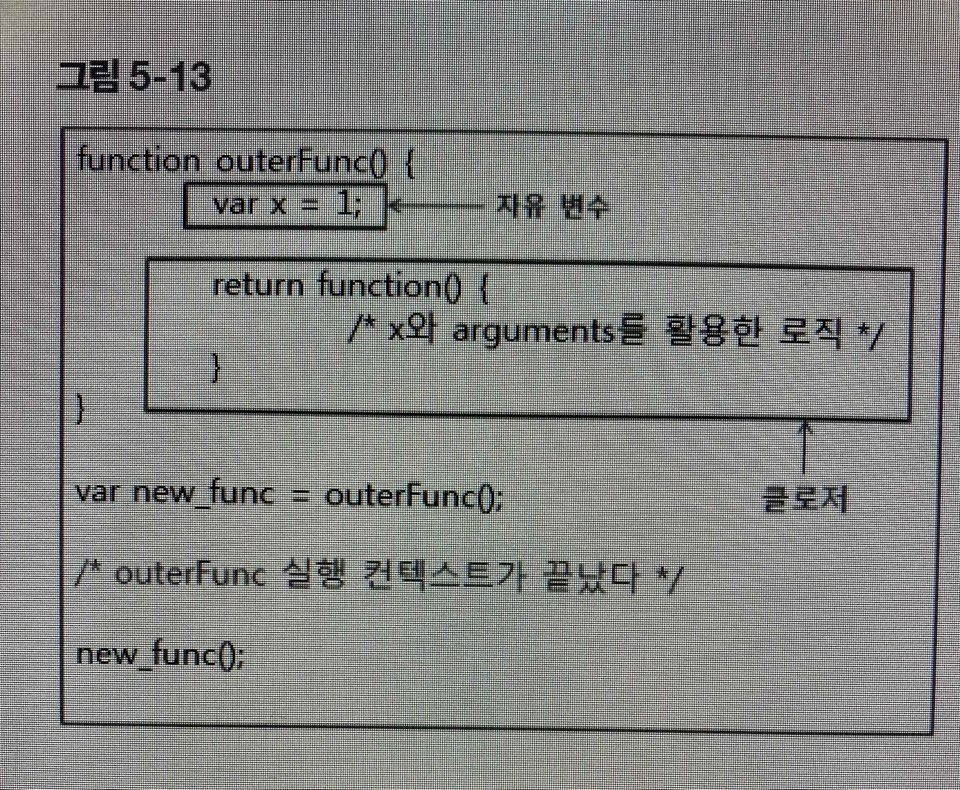

이미 생명 주기가 끝난 외부함수의 변수(=자유 변수)를 참조하는 함수를 클로저라고 한다. closure 라는 이름은 함수가 자유 변수에 대해 닫혀있다(closed bound)는 의미인데, 우리말로 의역하면 '자유 변수에 엮여있는 함수'라는 표현이 맞을 듯하다.
이 그림은 자바스크립트로 클로저를 구현하는 전형적인 패턴이다. 외부함수의 호출이 이루어지고, 이 외부함수에서 새로운 함수가 반환된다. 반환된 함수가 클로저이고 이 클로저는 자유 변수를 묶고 있다. 반환된 클로저는 새로운 함수로 사용된다. 대부분의 클로저를 활용하는 코드가 이와 같은 형식을 유지한다. 이러한 특성을 바탕으로 자바스크립트를 이용한 함수형 프로그래밍이 가능하다.